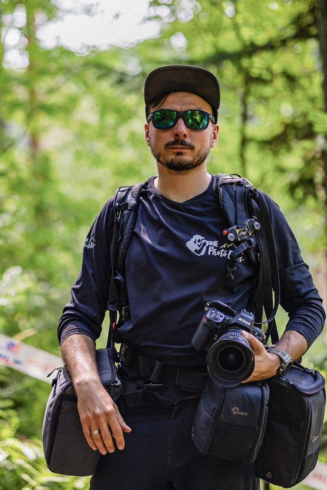
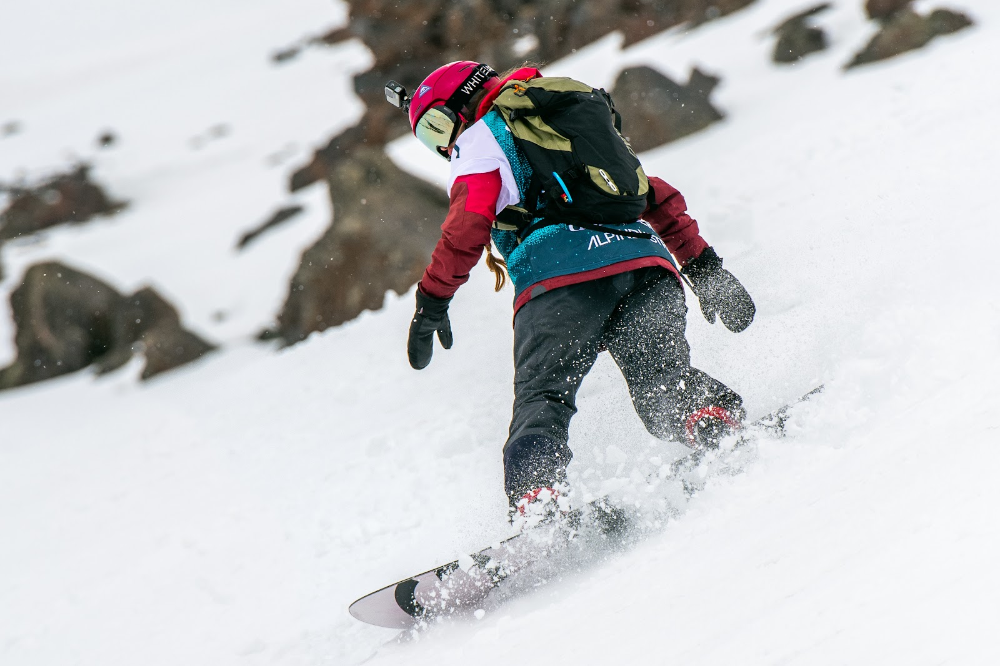
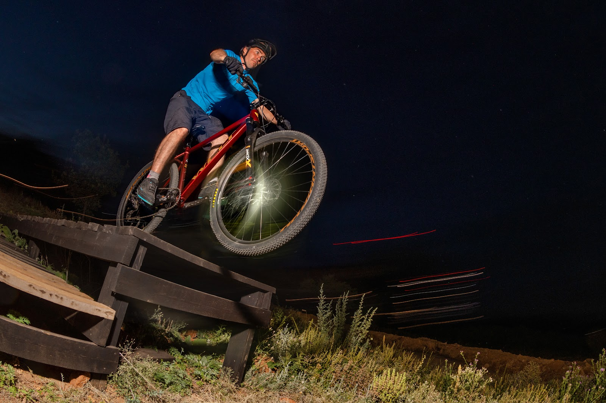
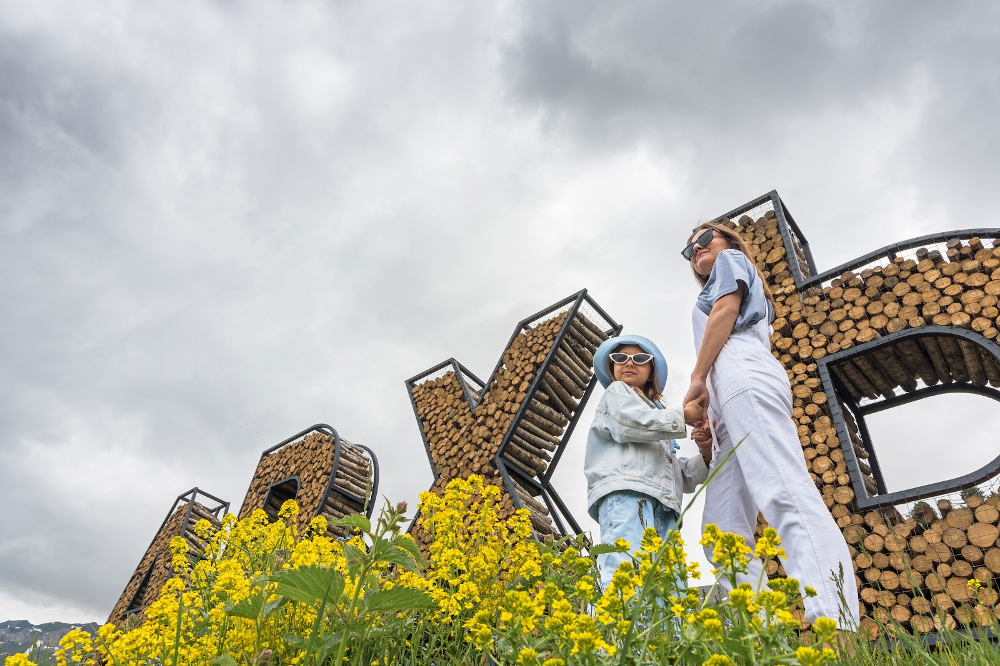

О фотографе
Привет! Меня зовут Uri Shymeiko. Я снимаю там, где горы встречаются с морем. Моя стихия — спорт, движение, живые эмоции и атмосфера курортной жизни круглый год.
Спортивный репортаж, велосипедные приключения и travel-съёмка зимой и летом — я передаю в кадре динамику, характер места и настоящие эмоции.
Портфолио
По одному кадру из каждого направления. Полное портфолио — более 50 работ — на отдельной странице.

Динамика соревнований, турниров и спортивных событий — эмоции и ключевые моменты в кадре.
Смотреть серию →
Велоспорт, MTB-приключения и гравийные гонки — свобода на двух колёсах в горах и на побережье.
Смотреть серию →
Курортный отдых, отели, пляжи и горнолыжные склоны — атмосфера зимы и лета 2019–2026.
Смотреть серию →Услуги
Съёмка соревнований, турниров и спортивных событий: динамика, эмоции, ключевые моменты.
Съёмка заездов, гонок и приключений на велосипеде; контент для брендов и команд.
Отели, пляжи, горнолыжные склоны, рестораны; атмосфера отдыха зимой и летом.
Серии кадров и репортажи для Instagram и VK, оперативная обработка.
Многолетний опыт работы фотографом, готовность снимать в любых условиях — от снежных склонов до морского побережья. Если вам нужны живые, динамичные кадры, которые передают эмоцию и рассказывают историю, — создадим их вместе.
Контакты
Расскажите о вашей съёмке — отвечу быстро и предложу формат. Свободные даты бронируются заранее, поэтому лучше написать сейчас.
{kind=link}
{kind=link}
{kind=link}